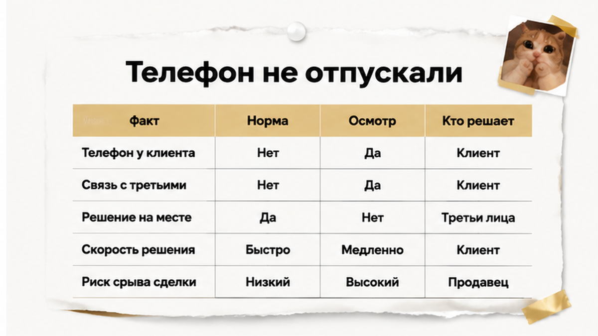
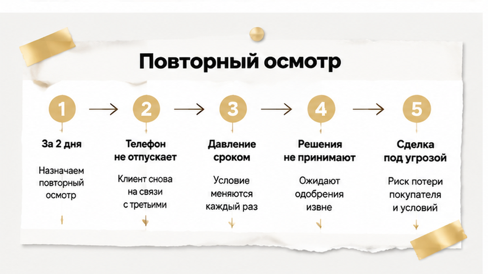
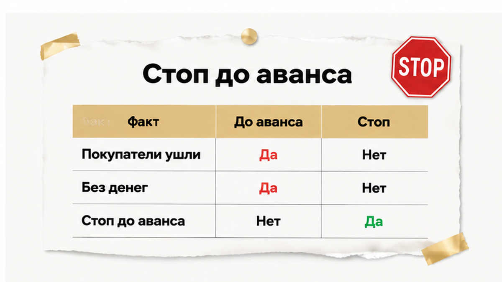
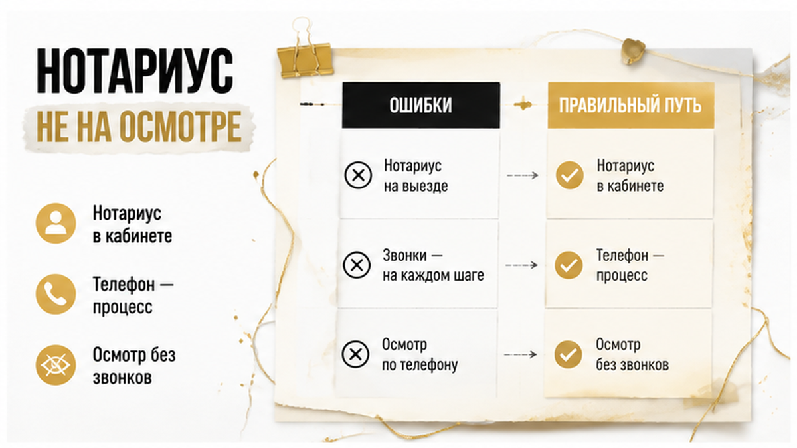
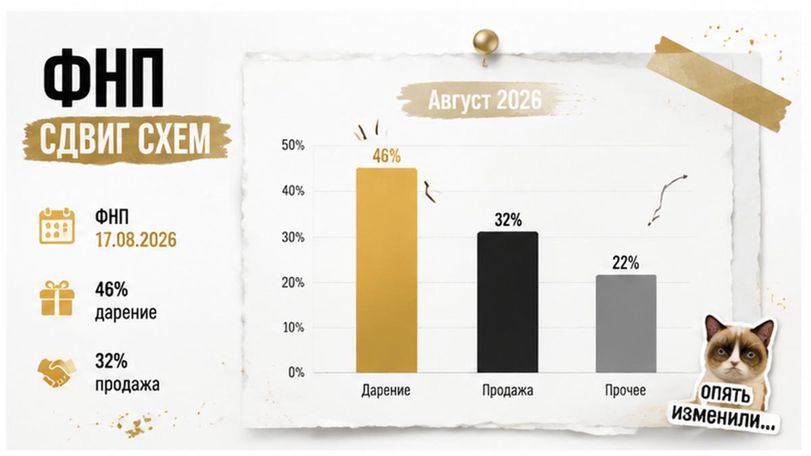
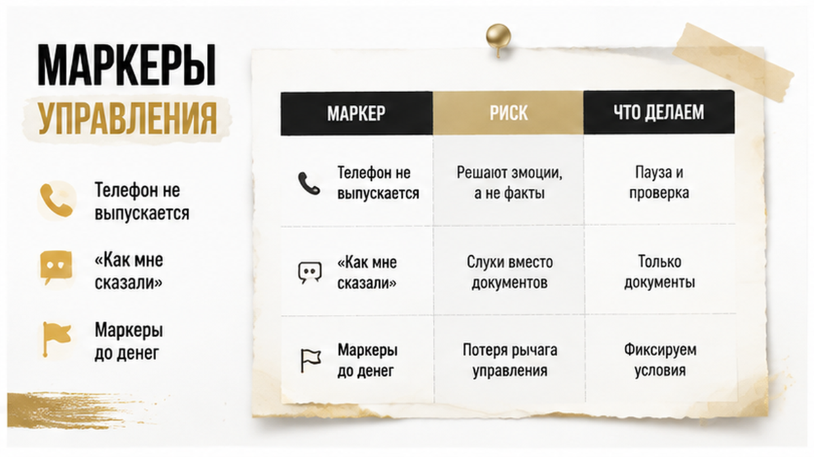
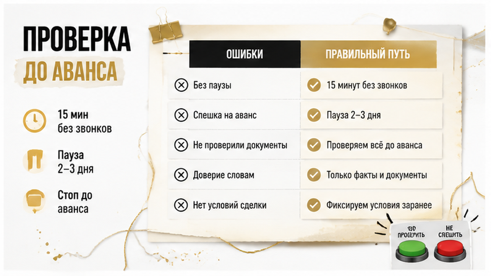

Сделка в Тюмени развалилась за два дня до нотариуса — и это лучшее, что с ней могло случиться. Август 2026-го, обычная вторичка: цену согласовали, покупатели были готовы вносить аванс, дата оформления стояла в календаре. На повторном осмотре пожилой собственник, которому за семьдесят, не выпускал из рук телефон: отвечал коротко, переспрашивал «как сказали», уходил от простых вопросов про собственную квартиру. Родственники, пришедшие вместе с ним, увидели ровно то же, что и я, — человек будто не сам ведёт этот разговор. Я зафиксировал поведенческие маркеры и рекомендовал остановиться до аванса. Родственники согласились, покупатели ушли без передачи денег, нотариуса вызывать не понадобилось.
Я Святослав Шакин, риелтор в Тюмени. В этой истории я был не стороной спора, а человеком на осмотре — до нотариуса, до аванса, до любых переводов. Дальше разбираю по шагам: что именно видно в квартире, почему нотариальная форма этот риск не закрывает и что успеть проверить покупателю и родственникам, пока деньги ещё никуда не ушли.
Разбираю такие ситуации в реальном времени — напишите, если поведение второй стороны на сделке вызывает сомнения: Telegram или MAX. Святослав Шакин, The Риэлтор, Тюмень.

До повторного осмотра сделка выглядела скучно. В хорошем смысле. Семья продавала квартиру, покупатели посмотрели объект, поторговались, сошлись на цене и подтвердили готовность внести аванс. Дата у нотариуса назначена. На этом этапе большинство участников мысленно уже закрыли сделку: осталась техника — документы, расчёты, регистрация.
Именно здесь бдительность и падает. Аванс кажется формальностью, потому что «всё же обсудили», а странности в поведении продавца списывают на возраст, волнение, усталость от показов. Но между «человек нервничает перед продажей квартиры» и «человеком управляют по телефону» разница не в диагнозе. Разница в наблюдаемом поведении: кто отвечает на вопросы, кто принимает решение, с кем продавец сверяется перед каждой репликой.
У этой развилки есть более привычный родственник — сделки, где решение фактически принимает не собственник, а тот, кто держит документы и ведёт переговоры. Такой случай я разбирал отдельно: доверенность не броня — продавец прилетел один, а квартиру продавали четверо. Разница вот в чём. Там чужая воля хотя бы оформлена бумагой. Здесь она не оформлена никак: телефон в руке юридически не значит ничего, а по факту ведёт всю сделку.

Покупатели приехали фактически на сверку — примерно за два дня до планировавшегося оформления. Собственник был на телефоне постоянно. Не «пару раз ответил на звонок», а именно постоянно: разговор в квартире шёл параллельно другому разговору, которого мы не слышали. Отвечал коротко. Переспрашивал «как сказали». Делал паузы перед ответами на бытовые вопросы. Телефон из рук не отдавал и не откладывал.
Эти маркеры описаны не только в моей практике. В профильных материалах риелторского рынка (например, у Владис) к признакам риска на осмотре относят взвинченное состояние продавца, постоянную переписку по телефону во время встречи и своеобразные «отчёты» удалённому собеседнику: «клиент пришёл», «договорились о цене». Ключевое здесь не громкость слов, а направление информации. Человек не спрашивает совета. Человек докладывает.
Про содержание звонков я сознательно ничего не утверждаю. Типовые легенды телефонных мошенников известны — «спецслужбы», «безопасный счёт», «операция под контролем», — но это описание типовых схем, а не расшифровка того конкретного разговора. Я не слышал звонивших и не называю продавца недееспособным: наблюдалось поведение, а не медицинский факт.
Второй сигнал был не в человеке, а в темпе. Дата нотариуса близко, аванс на подходе, любая пауза читается как срыв договорённостей. Давление сроком до аванса — отдельный жанр, я показывал его на другом кейсе: скидку два миллиона обещали, а в квартире прятали риск. Логика одна: чем быстрее вас двигают к деньгам, тем дороже стоит один вечер на проверку.

Финал короткий и на первый взгляд неэффектный. Я зафиксировал поведенческие маркеры и рекомендовал остановить сделку до внесения аванса. Родственники продавца согласились — они видели то же самое и сами первыми заговорили о том, что человека, похоже, ведут по телефону. Покупатели ушли без передачи денег. Нотариуса не вызывали, авансовое соглашение не подписывали, переводов не было.
Это превентивный стоп, а не оспаривание заключённого договора. Юридически не произошло ничего: нет сделки, нет расписки, нет спора, нет пострадавшей стороны. Поэтому такие истории почти не попадают в статистику — считают то, что дошло до суда, а не то, что развалилось на осмотре за два дня до нотариуса.
А теперь сравните с региональным фоном. В Тюменской области в 2024–2025 годах возбуждено девять уголовных дел о мошенничестве с жильём социально уязвимых собственников, и споры после отчуждения квартиры тянутся больше года. Известный региональный пример с 71-летней собственницей — уже совсем другой сценарий: деньги были переведены мошенникам после сделки, а разбирательство ушло за пределы года. Разница между «остановили» и «судимся» измеряется не качеством документов и не участием нотариуса. Она измеряется тем, успел ли кто-то распознать риск до передачи денег.

Когда я рассказываю этот случай, первый вопрос почти всегда один: «А нотариус бы не заметил?» Вопрос честный, но он про другой этап. Нотариус включается в момент удостоверения договора — в кабинете, по записи, в подготовленной обстановке. На повторном осмотре квартиры за два дня до этого его физически нет. Там есть покупатели, продавец, риелтор и, если повезло, родственники.
Разница не в квалификации, а в поле зрения. Нотариус видит человека в одной точке времени: пришёл, ответил на вопросы, подписал. Телефонное управление — это не момент, это процесс, растянутый на дни. Человека готовят к разговору, ему объясняют, что говорить, если спросят про деньги и про то, куда он поедет жить. К моменту удостоверения он уже отрепетирован. А на осмотре, когда покупатель неожиданно спрашивает про счётчики, а звонок в это время не прерывается, — сценарий трещит.
Федеральная нотариальная палата в своих разъяснениях говорит об этом прямо: участие нотариуса не исключает недействительности сделки, если продавец действовал под влиянием обмана. Это не «нотариус плохо работает». Это про то, что обман, проведённый чужими руками по телефону, снаружи выглядит как добровольное решение собственника. Он сам пришёл. Сам подписал. Сам сказал, что деньги ему нужны.
Отсюда вывод, который я повторяю на каждом просмотре: наблюдение на осмотре — это отдельный слой защиты, и обеспечить его может только тот, кто в квартире находится. Задним числом никто не восстановит, как продавец держал телефон и как переспрашивал «а как мне сказали?». Это одноразовая информация. Похожий сюжет — когда решение по квартире принимает вообще не тот, кто в ней живёт: я разбирал его в материале о том, как доверенность оказалась не бронёй, а продавец прилетел один, хотя квартиру продавали четверо. Там тоже формально всё было чисто.

Теперь про цифры — потому что они объясняют, почему такие истории всё чаще приходят именно через куплю-продажу, а не через дарение. В публикации от 17 августа 2026 года (dp.ru) ФНП описывает, как внимание мошенников сместилось после того, как с 2025 года дарение недвижимости стало обязательно нотариальным. Логика простая: закрыли одну дверь — поток пошёл в соседнюю.
За 2020–2025 годы в структуре оспариваний 46% приходилось на дарение и 32% — на куплю-продажу. После введения обязательной нотариальной формы дарения с начала 2025 года оспариваний дарения стало на 37% меньше, чем в 2024 году. И есть ещё одна цифра, которую читают неправильно чаще всех остальных: доля нотариально оформленных сделок среди спорных — 8,5%.
| Показатель ФНП | Что за ним стоит | Типичная ошибка чтения |
|---|---|---|
| 46% оспариваний за 2020–2025 — дарение | Дарение долго было самым удобным каналом отчуждения жилья у уязвимых собственников | «Значит, дарение теперь можно не проверять» |
| 32% оспариваний — купля-продажа | Купля-продажа была вторым каналом ещё до 2025 года, а не появилась внезапно | «Раньше по купле-продаже такого не было вообще» |
| −37% оспариваний дарения к 2024 году | Нотариальный барьер сбил поток именно в дарении, после того как форма стала обязательной | «Нотариус закрывает риск в любой форме сделки» |
| 8,5% спорных сделок — нотариальные | Это доля нотариальных внутри массива уже возникших споров | «Нотариальная сделка безопасна на 91,5%» |
Последняя строка важнее трёх предыдущих. 8,5% — это не вероятность «всё будет хорошо», а структура уже случившихся споров. Её не смешивают с обзорными долями рынка.
Рекомендации ФНП в этой части предельно приземлённые: фиксировать действительную волю продавца и избегать наличных расчётов. Оба пункта бьют в одну и ту же схему — когда человеку нужно быстро получить сумму в удобной для передачи форме и объяснить всем вокруг, что решение он принял сам.

Теперь про то, что конкретно я фиксировал на том осмотре. Сразу оговорюсь: это поведенческие наблюдения, а не медицинское заключение. Я не оцениваю дееспособность — я не врач и не суд. Я смотрю на одну вещь: кто прямо сейчас принимает решение по этой квартире — человек передо мной или голос в трубке.
Что было в кейсе:
Похожий набор описывают и коллеги: в материале Владис к признакам относят взвинченное состояние собственника, постоянную переписку в телефоне во время встречи и то, что человек фактически отчитывается удалённому «куратору» короткими репликами вроде «клиент пришёл», «договорились о цене». Это не про нервного продавца, который волнуется из-за большой сделки. Волнение выглядит наоборот: человек говорит больше, а не меньше.
Отдельно про легенды. В телефонных схемах регулярно всплывают «спецслужбы», «безопасный счёт», «операция по поимке преступников». Я перечисляю их как типовые объяснения, которые мошенники дают жертве, — а не как расшифровку того конкретного звонка. Что говорили продавцу в трубку, я не слышал и утверждать не буду. Мне для решения этого и не требовалось: хватило того, как он себя вёл.
И вот здесь ключевая развилка. Маркеры почти всегда появляются до денег — на осмотре, на согласовании, на обсуждении аванса. Дальше начинается фаза давления: «решайте сегодня», «другой покупатель уже готов», «скидка только до завтра». Как это выглядит с другой стороны стола, я показывал в разборе про то, как скидку в два миллиона обещали, а в квартире прятали риск: срочность в таких сделках почти никогда не принадлежит продавцу.

В том августовском кейсе я не делал ничего специального: смотрел, кто на самом деле отвечает на вопросы — человек передо мной или голос в трубке. Ниже — набор шагов, которые я в Тюмени прохожу с покупателями и близкими продавца до того, как кто-то достанет деньги. Ещё раз: это не проверка дееспособности и не медицинское суждение. Я наблюдатель на осмотре, и всё, что у меня есть, — поведение и последовательность ответов.
Разница между «спросил и пошёл дальше» и «остановил» видна, если разложить наблюдение на три части: что заметно на месте, что можно уточнить тут же и что придётся делать, если пропустить.
| Что видно на осмотре | Что можно уточнить на месте | Чем обернётся, если пропустить |
|---|---|---|
| Собственник не отпускает телефон, отвечает коротко | Просьба обсудить сроки без звонков; бытовые вопросы про переезд | Аванс уходит в сделку, которую потом придётся оспаривать |
| Формулировки «как сказали», «мне объяснили» | Кто именно объяснил и когда; присутствие близких на повторном осмотре | Продавцу — доказывать обман, покупателю — свою добросовестность |
| Взвинченное состояние, постоянная переписка | Пауза на два-три дня без давления по срокам | Темп сделки задаёт не покупатель и не продавец |
| Нет внятного плана «после продажи» | Куда переезжает, кто рядом, как поступают деньги | Спор о жилье и деньгах, который тянется больше года |
| Настойчивая просьба о наличных | Форма расчёта и место передачи денег | Средства уходят курьеру, вернуть их практически нечем |
И отдельно про давление по срокам: оно почти всегда упаковано в выгоду. В истории со скидкой в два миллиона торопили точно так же, только с другой стороны стола. Правило у меня одно: если решение нужно принять «сегодня до вечера», принимать его не нужно.
Вопрос, на который у меня нет универсального ответа. Если продавцу 70+ и он не отпускает телефон на осмотре — вы разворачиваетесь и уходите или всё-таки идёте в сделку, задав пару вопросов «для галочки»?
Разборы таких осмотров — до того, как деньги уехали — я выкладываю в Telegram. Если удобнее общаться там — я есть в MAX. Святослав Шакин, The Риэлтор, Тюмень.
Мой кейс закончился скучно: покупатели ушли, аванс не передавали, нотариуса не вызывали. Скучно — это и есть хороший финал. Чтобы понимать цену этой скуки, посмотрите на истории, где точку невозврата всё-таки прошли.
Кудрово, 21 августа 2026 года: 82-летняя собственница продала квартиру под телефонным давлением и передала курьеру 7,9 млн рублей, общий ущерб оценили в 8,95 млн. Это не доказательство того, что происходило на моём осмотре в Тюмени. Это иллюстрация того, как та же логика выглядит на два шага дальше: сделка состоялась, деньги вышли из-под контроля владельца, начинается разбирательство.
В Тюменской области по мошенничеству с жильём социально уязвимых граждан в 2024–2025 годах возбуждено девять уголовных дел. Один из региональных примеров — 71-летняя собственница, но сценарий там другой: она перевела деньги мошенникам уже после сделки и отказалась выезжать, спор с покупателем тянется больше года. Складывать это с нашим случаем нельзя — и именно поэтому пример полезен. Он показывает срок жизни конфликта, если решать его после подписания. Больше года против одного разговора на осмотре.
Про судебную часть без иллюзий. Влияние мошенников само по себе не отменяет сделку автоматически: продавцу придётся доказывать обман, покупателю — свою добросовестность и то, что он не проигнорировал явные признаки. ФНП отдельно отмечает, что нотариальное участие не исключает признания сделки недействительной при обмане, а доля нотариально оформленных среди спорных сделок — 8,5%; повторю, это доля нотариальных в массиве споров, а не «вероятность безопасности» нотариальной формы. Ни риелтор, ни банк, ни нотариус, ни видеофиксация не выдают гарантию. Они только сдвигают шансы.
Хуже всего ситуация выглядит там, где деньги уже ушли, а формально всё оформлено. Я писал об этом в кейсе, где расписку на квартиру написали, а денег на счёте не оказалось: с этой точки уже неважно, кто был вежлив на осмотре. Поэтому весь мой практический интерес живёт до аванса. Там ещё можно просто встать и уйти.
Материал проверен: Святослав Шакин, личный риэлтор в Тюмени. Ориентир для покупателя, не индивидуальная юридическая консультация.